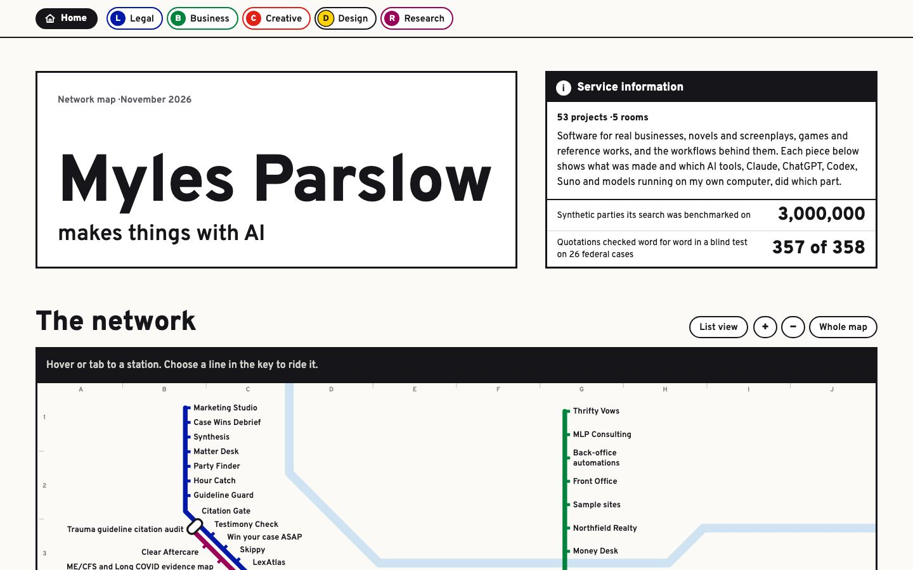

Transit Map Live now
Five rooms as transit lines and every project a station, on an octilinear network map with real interchanges.
- Ground
- Map white
- Type
- Overpass signage
- Layout
- Network map and line strip maps
- Motion
- Lines draw in once
- Signature
- Isolate a line, ride it into the room